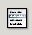
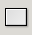

The Object Toolbar.
-
 Insert a label.
Insert a label.
This button allows the user to insert a text label into a worksheet.
-
 Insert a Frame.
Insert a Frame.
This button allows a user to insert a frame into a worksheet.
-
 Insert a Checkbox.
Insert a Checkbox.
This button allows a user to insert a check box.
-  Insert a List.
This button allows a user to insert a list.
-
 Insert a Combo Box
Insert a Combo Box
This allows a user to insert a Combo Box.
-
 Line
Line
Draw a line on the worksheet.
-
 Arrow
Arrow
Draw a line with a arrow at one end. A pointer.
-  Box
Draw a box onto the worksheet.
-
 Ellipse
Ellipse
Draw an ellipse or a circle on the worksheet.